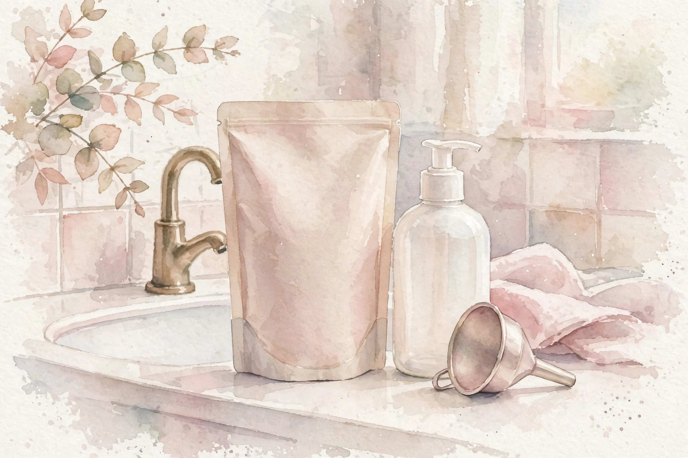

詰め替え用を買う時の確認点

詰め替え用は、本体を繰り返し使うための経済的な仕組みですが、買い間違いや詰め替え時の手順ミスも起きやすいところです。この記事では、買う時の確認点を整理します。
「同じ商品か」の確認が第一
いちばん多い失敗は、シリーズ違いの詰め替えを買ってしまうことです。同じブランドでも、香りやタイプの違うラインが並んでいます。買う前に、本体ボトルの商品名と、詰め替えパッケージの商品名を、一字ずつ見比べるくらいの慎重さが確実です。シャンプーとコンディショナーの取り違えも、パッケージが似ているため起きやすい間違いです。
本体ボトルの写真をスマートフォンに撮っておくと、売り場での見比べが簡単になります。
詰め替えの手順表示と、日付の記録
詰め替えのパッケージには、詰め替え方の手順が表示されていることが多いです。ボトルを洗って乾かすのか、そのまま注ぐのかは商品の案内に従います。詰め替えた日付をボトルに書いておくと、次回の詰め替え時期の目安になり、衛生面の管理にも役立ちます。
詰め替えの途中で別の商品を混ぜることは、表示の前提を外れるので避けるのが基本です。残量がわずかな場合は、使い切ってから詰め替える方が管理が簡単です。
単価は、容量で割って比べる
詰め替え用が本当にお得かどうかは、内容量で割って単価を比べて判断します。本体と詰め替えで容量が違うことも多いため、そのままの価格比較では判断を誤ります。大容量の詰め替えは単価が下がることが多い一方で、使い切るまでの期間が長くなる点もあわせて考えます。
確認は、商品名の見比べ、手順表示、日付の記録、単価の計算。この4点で、詰め替えの失敗はかなり減らせます。
詰め替え用を買い置きする場合の保管についても触れておきます。詰め替えパックは、直射日光の当たる場所や高温の場所を避け、使う順番が分かるように日付順に並べて保管します。複数のボトルを使い分けている家庭では、どのボトルに何を詰めたかをボトルの底に小さく書いておくと、家族の取り違えも防げます。また、詰め替えの容量が本体より大きい場合は、一度に全部を注がず、残りをパックのまま保管する方法もあります。その際は、パックの口を清潔に保ち、早めに使い切る計画を立ててください。詰め替えは、経済面だけでなく、容器を長く使うという面でも意味のある仕組みです。手順を丁寧にすることが、その仕組みを長持ちさせます。
詰め替えの際に、ボトルのポンプ部分の汚れもあわせて確認しておくと衛生的です。外側を拭く、ノズルの先を清潔に保つといった小さな手入れが、毎日使う道具の気持ちよさにつながります。手入れのタイミングは、詰め替え日とセットにすると忘れません。
セラフィナ「詰め替えは、まず名前の見比べから。詰めた日付を書くと管理が楽だね」

セラフィナ｜美容の道具箱の案内役
「量と表示が分かれば、美容は失敗しない。」——セラフィナと白猫のモコが、買う前のチェックポイントを案内します。綺麗になりたい気持ちに正直に、でも表示は冷静に読むのが、このサイトの約束です。